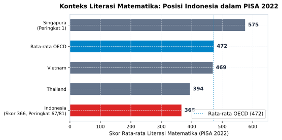

1 Menghafal Rumus, Buta Makna
“Dalam tradisi keilmuan yang luhur, kita diajarkan meneliti kesahihan sumber hingga ke perawi terjauh sebelum mempercayai sebuah kabar. Namun, ketika berhadapan dengan selembar grafik berangka di dunia modern, mengapa kita begitu mudah menelan kesimpulan tanpa menanyakan dari mana angka itu bermula?”
1.1 Cahaya di Balik Meja Belajar
Malam telah larut di sebuah ruang belajar sekolah menengah di Jawa Timur. Suara deru angin malam yang menelusup dari sela jendela kayu menemani kesunyian meja belajar. Di sudut ruangan, seorang siswa kelas dua belas bernama Ahmad masih menekuri lembaran kertas bergaris di bawah pendar lampu neon yang temaram.
Ahmad bukan siswa sembarangan. Ia adalah bintang kelas dalam pelajaran matematika dan sains. Di hadapannya, lembar tugas sekolah bertabur rumus statistika deskriptif: nilai rata-rata hitung, median, modus, hingga simpangan baku. Tangannya bergerak lincah menarikan pena, menyusun kolom demi kolom tabel frekuensi dengan ketelitian yang mengagumkan. Ketika diminta menghitung rata-rata dari data kelompok, ia tidak pernah salah memasukkan rumus:
\[\bar{x} = \frac{\sum_{i=1}^{k} f_i \cdot m_i}{\sum_{i=1}^{k} f_i}\]
Bagi Ahmad, angka-angka itu adalah barisan prajurit yang patuh. Setiap variabel ia posisikan pada tempatnya, dikalikan dengan bobot frekuensi, lalu dibagi dengan total frekuensi pengamatan. Hasil akhirnya selalu tepat hingga dua angka di belakang koma. Keesokan harinya, ketika lembar jawaban itu dikembalikan oleh sang guru, sebuah angka seratus bersanding dengan coretan tinta merah pujian tertera di pojok kanan atas kertasnya. Guru tersenyum bangga, kawan-kawan sebangku mengagumi kecepatannya, dan Ahmad merasa telah menguasai cabang ilmu yang bernama statistika.
Di lingkungan pendidikan yang mengagungkan kecepatan kalkulasi, kemampuan Ahmad menghafal rumus dan mengeksekusi prosedur aritmetika dipandang sebagai puncak kecerdasan kuantitatif. Namun, di balik meja belajar itu, sebuah tabir tebal sesungguhnya masih menutupi pandangannya. Ahmad sangat mahir menghitung angka, tetapi ia belum pernah diajak untuk mencurigai angka.
1.2 Ujian Tak Terduga di Meja Koperasi Sekolah
Titik balik pemikiran itu datang beberapa bulan kemudian, ketika kepala sekolah memberikan sebuah amanah baru kepada Ahmad. Ia ditunjuk menjadi ketua tim pengelola unit usaha koperasi siswa yang melayani kebutuhan ratusan murid dan warga sekolah, mulai dari buku catatan, alat tulis, seragam, hingga makanan ringan.
Suatu sore menjelang libur semester, seorang perwakilan distributor makanan olahan dari luar kota datang bertamu ke kantor koperasi. Mengenakan kemeja rapi dan membawa map jilid mengilap, sang perwakilan menyodorkan sebuah selebaran infografis promosi produk susu bantal dan biskuit gandum. Distributor itu menawarkan kerja sama konsinyasi besar-besaran untuk memasok kantin sekolah selama satu tahun ke depan.
“Lihat grafik ini, Mas Ahmad,” kata sang perwakilan seraya menunjuk sebuah diagram batang berwarna merah cerah di halaman depan brosur. “Ini data penjualan produk kami dibandingkan dengan merek lama yang saat ini dijual di koperasi sekolah Anda. Batang produk kami tingginya hampir lima kali lipat dibandingkan merek kompetitor. Ini bukti sahih bahwa kepuasan dan minat beli konsumen di berbagai sekolah lain melonjak drastis. Kalau koperasi sekolah ini beralih ke produk kami, keuntungan koperasi dijamin melipat ganda.”
Ahmad menatap grafik tersebut dengan seksama. Matanya terpaku pada ketinggian batang merah yang menjulang tinggi, sementara batang biru milik produk lama tampak kerdil di dasar kanvas. Nalarnya yang terbiasa dengan kalkulasi hafalan tidak menemukan kejanggalan pada barisan angka persentase. Tanpa ragu, ia menyetujui kontrak pasokan perdana dalam jumlah besar.
Beberapa pekan kemudian, sebuah keganjilan mulai tampak di lapangan. Barang-barang baru itu menumpuk di gudang sekolah, berdebu dan lambat laku. Ketika Ahmad memeriksa kembali dokumen laporan penjualan yang asli bersama seorang alumni senior yang berprofesi sebagai akuntan, sang senior tersenyum tipis dan menunjukkan letak persoalannya.
“Coba perhatikan garis sumbu vertikalnya, Ahmad,” ujar sang senior lembut seraya menunjuk pangkal grafik pada brosur distributor. “Grafik ini tidak dimulai dari angka nol. Sumbu tegaknya sengaja dipotong dan baru dimulai pada angka sembilan puluh tujuh persen. Produk lama mereka memiliki tingkat kepuasan sembilan puluh delapan persen, sedangkan produk baru mereka berada di angka sembilan puluh sembilan persen. Selisih aslinya hanya satu persen, sebuah variasi tipis yang belum tentu bermakna. Namun, karena pembuat grafik membuang bidang dasar antara nol hingga sembilan puluh tujuh, perbedaan satu persen itu disulap menjadi ilusi visual yang tampak seolah perbedaannya raksasa: batang sembilan puluh sembilan persen tampak dua kali lebih tinggi daripada batang sembilan puluh delapan persen.”
Dada Ahmad berdegup kencang. Ia tertegun memandangi kertas itu. Bagaimana mungkin dirinya, seorang siswa berprestasi yang selalu meraih nilai sempurna dalam ujian matematika, bisa tertipu mentah-mentah oleh selembar gambar sederhana? Mengapa kemampuan menghitung rata-rata hingga tiga angka di belakang koma tidak menyelamatkannya dari jebakan manipulasi visual yang begitu kasat mata?
1.3 Membedah Ilusi: Skemp dan Epistemologi Mantiq
Pengalaman pahit yang dialami Ahmad di ruang koperasi santri bukanlah kegagalan personal, melainkan manifestasi dari kerapuhan sistemik dalam cara kita memandang ilmu matematika. Untuk memahami mengapa seseorang yang cerdas berhitung bisa buta terhadap makna, kita perlu menengok sebuah pemikiran klasik yang dicetuskan oleh psikolog dan pakar pendidikan matematika asal Inggris, Richard R. Skemp, pada tahun 1976 (Skemp 1976).
Dalam risalahnya yang berjudul Relational Understanding and Instrumental Understanding, Skemp membedakan dua bentuk pemahaman manusia yang tampak serupa di permukaan namun memiliki jurang pemisah yang sangat dalam pada struktur kognitifnya:
1.3.1 Pemahaman Instrumental (Instrumental Understanding)
Pemahaman instrumental adalah penguasaan “aturan tanpa alasan” (rules without reasons). Seseorang yang memiliki pemahaman instrumental tahu langkah-langkah mekanis untuk mencapai sebuah jawaban benar, tetapi tidak memahami jaringan konseptual yang menopang rumus tersebut.
Ketika seorang murid diajarkan bahwa rata-rata hitung sampel (\(n\)) diperoleh dengan membagi jumlah seluruh nilai pengamatan dengan ukuran sampel:
\[\bar{x} = \frac{1}{n}\sum_{i=1}^{n} x_i\]
Ia menghafal urutan tombol kalkulator atau urutan goresan pena di kertas. Jika kita mengubah sedikit bentuk soalnya, atau jika kita bertanya mengapa nilai rata-rata sangat rentan terdistorsi oleh satu angka pencilan (outlier) yang ekstrem, pemahaman instrumentalnya akan runtuh seketika. Siswa tersebut layaknya orang asing yang menghafal peta belokan gang di sebuah kota kuno: ia tahu harus belok kanan setelah pohon beringin dan belok kiri di depan pos ronda, tetapi jika ada jalan yang ditutup, ia tersesat total karena tidak memiliki gambaran menyeluruh tentang tata ruang kota tersebut.
1.3.2 Pemahaman Relasional (Relational Understanding)
Sebaliknya, pemahaman relasional adalah kemampuan mengetahui apa yang harus dilakukan dan mengapa hal itu dilakukan (knowing both what to do and why). Dalam ranah relasional, matematika dipahami sebagai jalinan makna yang hidup.
Pembelajar yang memiliki pemahaman relasional tidak sekadar menghitung angka rata-rata, melainkan memahami bahwa rata-rata hanyalah salah satu cara untuk meringkas pusat gravitasi data. Ketika ia melihat data pendapatan penduduk suatu wilayah atau data pengeluaran operasional sebuah komunitas, ia secara kritis mempertimbangkan apakah rata-rata adalah ukuran yang adil, ataukah nilai median jauh lebih jujur untuk menggambarkan realitas karena adanya jurang ketimpangan yang lebar.
1.3.3 Tradisi Logika Kritis dan Nalar Sanad
Bagi para pembelajar yang akrab dengan khazanah logika klasik dan metodologi berpikir kritis, dikotomi yang dirumuskan oleh Richard Skemp ini sesungguhnya sangat sejalan dengan prinsip epistemologi fundamental. Dalam tradisi keilmuan, para pemikir membedakan secara tegas antara hafalan teks lahiriah dengan pemahaman substansi makna dan alasan mendasar sebuah kesimpulan. Seseorang yang hanya menghafal prosedur tanpa memahami latar belakangnya akan mudah terjebak dalam kekakuan berpikir saat menghadapi realitas sosial yang dinamis.
Lebih jauh lagi, sejarah peradaban mewariskan metodologi verifikasi informasi paling ketat: tradisi pembuktian sanad dan kritik sumber (source criticism). Ketika seorang peneliti mengkaji sebuah laporan, ia tidak pernah langsung menerima kebenaran isi teks sebelum memeriksa asal-usul pihak yang membawanya. Ia meneliti satu per satu: Apakah sumber ini memiliki rekam jejak yang jujur dan tepercaya? Apakah instrumen pengukurannya sahih? Apakah ada rantai informasi yang hilang atau sengaja disembunyikan?
Krisis literasi data yang melanda masyarakat modern terjadi justru karena kita jarang menerapkan nalar verifikasi kritis ini ke dalam dunia kuantitatif. Angka sering kali dianggap suci dan bebas dari kepentingan manusia. Padahal, sebuah grafik data tidak pernah jatuh dari langit dalam keadaan netral. Grafik selalu memiliki perawi: ada institusi yang mengumpulkan datanya, ada metodologi penarikan sampel yang digunakannya, ada tujuan komunikasi di balik penerbitannya, dan ada keputusan sadar desainer grafis untuk menentukan di mana sumbu koordinat harus dipotong.
Ketika kita membaca grafik tanpa menanyakan siapa pengumpul datanya, bagaimana sampelnya dipilih, dan mengapa skala visualnya dirancang sedemikian rupa, kita sesungguhnya sedang menerima sebuah kabar tanpa sanad. Meneliti sumbu vertikal dan ukuran sampel sebuah grafik pada hakikatnya sama pentingnya dengan meneliti kejujuran dan ketersambungan riwayat dalam tradisi transmisi keilmuan.
1.3.4 Alarm Data: Kesenjangan Literasi Matematika Indonesia
Ketertinggalan dalam pemahaman relasional ini bukan sekadar cerita fiksi di meja koperasi sekolah, melainkan kenyataan pahit yang terdokumentasikan dalam evaluasi internasional. Laporan Programme for International Student Assessment (PISA) tahun 2022 yang dirilis oleh OECD memberikan potret buram mengenai kemampuan bernalar kuantitatif generasi muda kita (OECD 2023).

Sebagaimana tampak jelas pada Figure 1.1, pada siklus PISA 2022 skor rata-rata literasi matematika siswa Indonesia berada pada level 366, menempatkan negeri kita pada kelompok performa bawah di antara 81 negara yang berpartisipasi. Skor ini tertinggal jauh di bawah rata-rata negara anggota OECD yang berada di angka 472.
Pada siklus terbaru, PISA 2025, potret itu relatif stabil: skor matematika Indonesia 364 dengan rerata OECD 463, dan PISA 2025 turut mengukur domain baru computational problem solving yang relevan dengan era kecerdasan buatan (OECD 2026). Kedua siklus memberi pesan yang sama dan menjadi bingkai temporal buku ini: PISA 2022 adalah konteks historis, PISA 2025 adalah keadaan terkini saat buku disusun.
Angka 366 ini menyimpan sebuah pesan mendalam. Soal-soal PISA tidak menguji apakah seorang siswa hafal rumus kuadratik atau mampu mengalikan angka desimal bersusun panjang dengan kecepatan kilat. Soal-soal PISA menyajikan studi kasus dunia nyata: membaca tabel tarif air minum perkotaan, mengevaluasi efektivitas kampanye vaksinasi berdasarkan grafik sebaran, atau membandingkan rencana investasi menggunakan data tren.
Ketika anak-anak kita yang terbiasa meraih nilai tinggi pada soal-soal latihan rutin dihadapkan pada grafik yang membutuhkan tafsir kritis dan pembuktian kontekstual, nalar mereka mendadak membeku. Kita melahirkan jutaan penghafal prosedur, tetapi gagal mencetak pemikir yang mampu membaca pesan terselubung di balik angka.
Kesenjangan literasi data (Data Literacy Gap) ini kemudian merembes ke ranah kepemimpinan publik dan dunia kerja profesional. Di kantor pemerintahan, ruang rapat perusahaan, lembaga filantropi Islam, hingga panggung dakwah media sosial, keputusan-keputusan strategis bernilai miliaran rupiah kerap diambil hanya berdasarkan infografis yang memanipulasi skala atau grafik korelasi palsu yang tidak memiliki dasar kausalitas ilmiah.
1.4 Literasi Data di Era Kecerdasan Buatan
Kebutuhan masyarakat kita, mulai dari pendidik, mahasiswa, orang tua, hingga praktisi profesional, untuk menguasai literasi data relasional kini berada pada titik paling genting dalam sejarah peradaban. Kita tidak lagi hidup di era ketika informasi bersifat langka dan sulit dicari. Sebaliknya, kita sedang berenang di tengah lautan data raksasa yang dipercepat oleh kehadiran kecerdasan buatan generatif (Generative AI) dan algoritma media sosial.
Saat ini, sistem kecerdasan buatan berbasis model bahasa besar mampu menulis rumus matematika, menganalisis basis data jutaan baris, dan memproduksi visualisasi data yang memukau hanya dalam rentang beberapa detik. Keterampilan menghafal rumus mekanis yang selama ini dibanggakan di ruang kelas formal telah sepenuhnya diotomatisasi oleh mesin. Jika kita hanya mengandalkan kemampuan berhitung teknis, nilai tambah kemanusiaan kita akan tergerus oleh efisiensi algoritma.
Namun, di balik kepintarannya yang luar biasa, kecerdasan buatan memiliki kelemahan mendasar yang sangat rapuh: ia fasih merangkai kata dan angka, tetapi ia tidak memiliki kesadaran moral dan nurani untuk membedakan kebenaran hakiki dari kepalsuan. Sistem AI dilatih untuk memprediksi probabilitas kata berikutnya yang terdengar meyakinkan bagi manusia. Akibatnya, mesin kecerdasan buatan kerap mengalami halusinasi statistik (statistical hallucinations): mengarang data survei fiktif, menyitir persentase dari sumber yang tidak pernah ada, atau menarik korelasi keliru antara dua fenomena yang tidak berhubungan sama sekali.
Di sinilah peran generasi masa depan terpanggil: generasi pembelajar yang memadukan ketajaman logika, ketelitian verifikasi data, dan integritas moral. Mereka akan tampil sebagai benteng akal sehat di tengah masyarakat yang mudah terombang-ambing oleh klaim kuantitatif palsu.
Literasi data bukan lagi sekadar ilmu hitung mekanis yang terpisah dari nilai kemanusiaan, melainkan sebuah instrumen kebaikan publik dan pengabdian peradaban. Menyelamatkan masyarakat dari manipulasi grafik, membongkar penipuan investasi bodong yang memanipulasi persentase keuntungan, serta memastikan bahwa alokasi anggaran pembangunan dihitung secara adil berdasarkan bukti empiris yang transparan adalah wujud nyata dari pelaksanaan tanggung jawab moral di era digital.
Jalan menuju ke sana tidak harus dimulai dengan pengadaan laboratorium komputer canggih atau perangkat lunak berbayar yang mahal. Perjalanan ini bermula dari keberanian sederhana di ruang kelas, ruang kerja, dan ruang keluarga kita: keberanian untuk tidak lagi puas hanya dengan menghafal rumus, keberanian untuk menatap setiap grafik dengan rasa ingin tahu yang kritis, dan keteguhan untuk selalu menanyakan nalar dan nurani di balik angka.